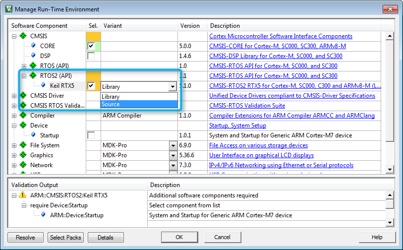
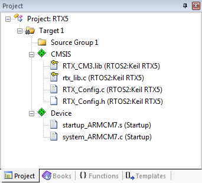
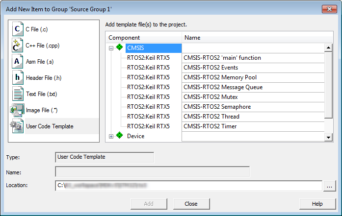
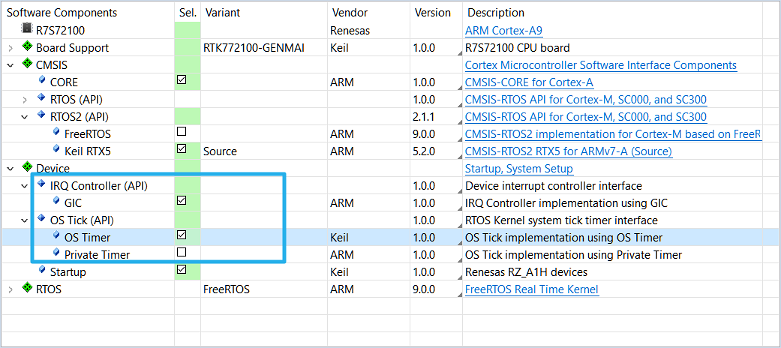
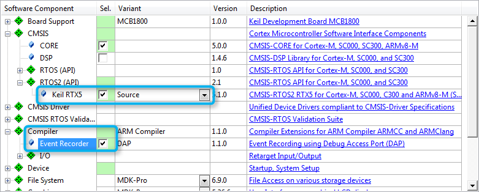

The steps to create a microcontroller application using RTX5 are:
- Create a new project and select a microcontroller device.
- In the Manage Run-Time Environment window, select CMSIS::CORE and CMSIS::RTOS2 (API)::Keil RTX5. You can choose to either add RTX as a library (Variant: Library) or to add the full source code (Variant: Source - required if using the Event Recorder):

- If the Validation Output requires other components to be present, try to use the Resolve button.
- Click OK. In the Project window, you will see the files that have been automatically added to you project, such as RTX_Config.h, RTX_Config.c, the library or the source code files, as well as the system and startup files:

- If using the Variant: Source as stated above, you have to assure to use at least C99 compiler mode (Project Options -> C/C++ -> C99 Mode).
- You can add template files to the project by right-clicking on Source Group 1 and selecting Add New Item to 'Source Group 1'. In the new window, click on User Code Template. On the right-hand side you will see all available template files for CMSIS-RTOS RTX:

- Configure RTX5 to the application's needs using the RTX_Config.h file.
Additional requirements for RTX on Cortex-A
Cortex-A based microcontrollers are less unified with respect to the interrupt and timer implementations used compared to M-class devices. Thus RTX requires additional components when an A-class device is used, namely IRQ Controller (API) and OS Tick (API) implementations.

The default implementations provided along with CMSIS are
For devices not implementing GIC, PTIM nor GTIM please refer to the according device family pack and select the proper implementations.
Using Interrupts on Cortex-M
On Cortex-M processors, the RTX5 kernel uses the following interrupt exceptions. The table below also lists the priorities that must be assigned to these interrupts.
| Handler | Priority | Interrupt/Exception |
| SysTick | lowest | Kernel system timer interrupt to generate periodic timer ticks |
| PendSV | lowest | PendSV (request for system-level service) when calling certain RTX functions from Handler mode |
| SVC | lowest+1 | Supervisor Call used to enter the RTOS kernel from Thread mode |
Other device interrupts can be used without limitation. For Arm Cortex-M3/M4/M7 /M23/M33/M35P processors, interrupts are never disabled by RTX Kernel.
Usage of interrupt priority grouping
- The interrupt priority grouping should be configured using the CMSIS-Core function NVIC_SetPriorityGrouping before calling the function osKernelStart(). The RTX kernel uses the priority group value to setup the priority for SysTick and PendSV interrupts.
- The RTX kernel sets the priority for the interrupts/exceptions listed in above table and uses the lowest two priority levels.
- Do not change the priority used by the RTX kernel. If this cannot be avoided, ensure that the preempt priority of SysTick/PendSV is lower than SVC.
- Permitted priority group values are 0 to 6. The priority group value 7 will cause RTX to fail as there is only one priority level available.
- The main stack is used to run the RTX functionality. It is therefore required to configure sufficient stack for the RTX kernel execution.
Code Example
NVIC_SetPriorityGrouping (3);
osStatus_t osKernelStart(void)
Start the RTOS Kernel scheduler.
osStatus_t osKernelInitialize(void)
Initialize the RTOS Kernel.
osThreadId_t osThreadNew(osThreadFunc_t func, void *argument, const osThreadAttr_t *attr)
Create a thread and add it to Active Threads.
Add support for RTX specific functions
If you require some of the RTX specific functions in your application code, #include the header file rtx_os.h. This enables low-power and tick-less operation modes.
Add Event Recorder Visibility
RTX5 interfaces to the Event Recorder to provide event information which helps you to understand and analyze the operation.
- To use the Event Recorder together with RTX5, select the software component Compiler:Event Recorder.
- Select the Source variant of the software component CMSIS:RTOS2 (API):Keil RTX5.

Component selection for Event Recorder
- Enable the related settings under Event Recorder Configuration.
- Build the application code and download it to the debug hardware. Once the target application generates event information, it can be viewed in the µVision debugger using the Event Recorder.